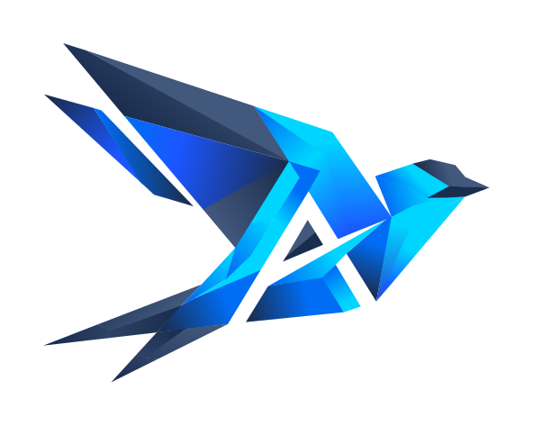

See where AI can help
allianceaipartners.example


The AI team you don’t have to hire.
We build it, run it, and help you grow.
See where AI can help
allianceaipartners.example

We build it, run it, and help you grow.